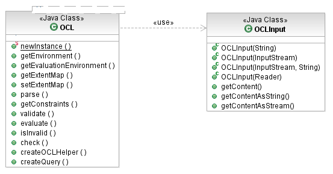

As we saw in the "Parsing Constraints and Queries" topic, the OCL parser provides an OCLHelper API for parsing constraints embedded in models. OCL also permits constraints to be specified in a text document, as an adjunct to the model. In this case, the concrete syntax for context declarations indicates the context of constraints, equivalent to their placement in models.
As an example, consider the following document:
package extlibrary
context Library
-- get all books with a title in a library and its branches (recursively)
def: getBooks(title : String) : Set(Book) =
books->select(b | b.title = title)->asSet()->union(
branches.getBooks(title))
context Book
-- the library containing a book
def: library : Library = Library.allInstances()->any(books->includes(self))
-- book titles are unique within their library branch (and its sub-branches)
inv unique_title: not library.oclIsUndefined() implies
library.getBooks(title) = Set{self})
endpackage
The OCLInput class encapsulates an OCL document. An input can be created from a string or an input stream.

[as SVG]
Given an OCLInput, simply ask an OCL to parse it:
OCL<?, EClassifier, ?, ?, ?, ?, ?, ?, ?, Constraint, EClass, EObject> ocl;
ocl = OCL.newInstance(EcoreEnvironmentFactory.INSTANCE);
// get an OCL text file via some hypothetical API
IFile file = getWorkspaceFile("/ocl/constraints.ocl");
InputStream in = file.getContents();
Map<String, Constraint> constraintMap = new HashMap<String, Constraint>();
// parse the contents as an OCL document
try {
OCLInput document = new OCLInput(in, file.getCharset());
List<Constraint> constraints = ocl.parse(input);
for (Constraint next : constraints) {
constraintMap.put(next.getName(), next);
OCLExpression<EClassifier> body = next.getSpecification().getBodyExpression();
System.out.printf("%s: %s%n", next.getName(), body);
}
} finally {
in.close();
}
The OCL returns the list of constraints if they were successfully parsed. They are retained by the OCL (available via the getConstraints() method at any time), and in particular, any definitions of additional operations or attributes are available for subsequent constraint parsing. Any number of OCL documents may be parsed by the same OCL instance, combined also with constraints parsed by OCLHelpers. All of these constraints are retained by the OCL environment.
Library library = getLibrary(); // get library from a hypothetical source
OCLHelper<EClassifier, ?, ?, Constraint> helper = ocl.createOCLHelper();
// use the constraints defined in the OCL document
// use the getBooks() additional operation to find a book
helper.setContext(EXTLibraryPackage.Literals.LIBRARY);
OCLExpression<EClassifier> query = helper.createQuery(
"getBooks('Bleak House')->asSequence()->first()");
Book book = (Book) ocl.evaluate(library, query);
System.out.printf("Got book: %s%n", book);
// use the unique_title constraint to validate the book
System.out.printf("Validate book: %b%n",
ocl.check(book, constraintMap.get("unique_title"));
Copyright (c) 2000, 2007 IBM Corporation and others. All Rights Reserved.